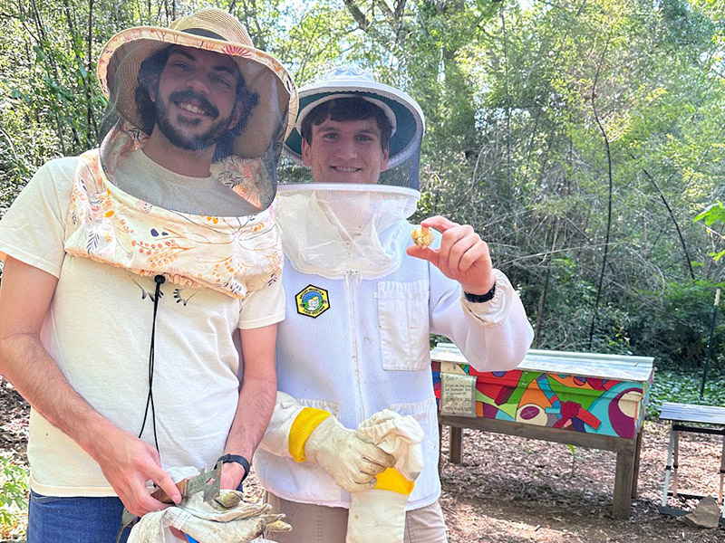
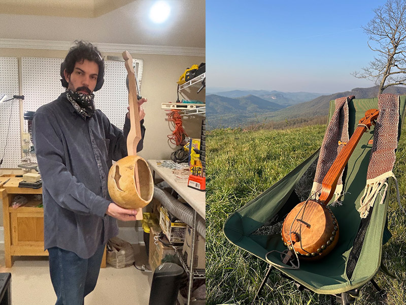
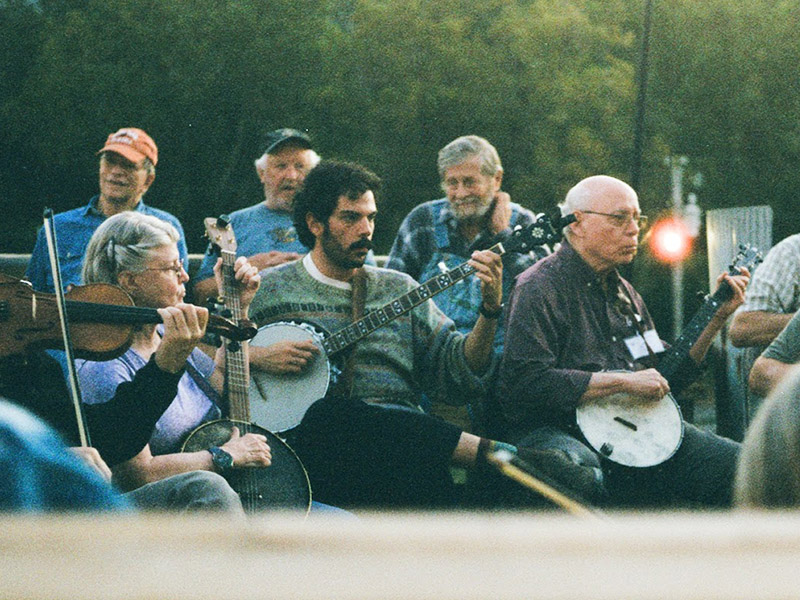
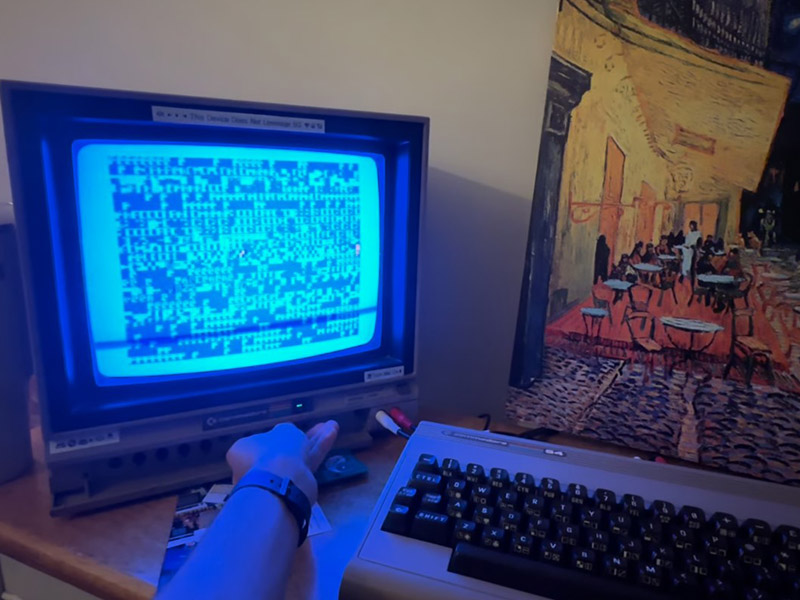

Hobbies
I believe the creative work people have outside of their standard work is a big part of what makes us who we are. I love my hobbies and find that they help influence and define my craft; often the lessons I learn doing this work inform much more than I expect.

Beekeeping
I started attempting beekeeping about 2 years ago when my roommate left a copy of a beekeeping book on our coffee table. His mom happened to be a master beekeeper, and within a week I was in a bee suit trying it out. Since then, my roommate and I won a honey show in 2024, and in 2025 we taught an Intro to Beekeeping class for community members at the Lake Claire Community Land Trust in Atlanta. Bees are some of the coolest creatures in the world, and taking care of them is both extremely stressful and incredibly calming.

Woodworking and instrument making
About a year ago I started teaching myself the basics of woodworking, and through a lot of helpful YouTube videos I got the idea that I could make my own gourd banjo (it’s a lot cheaper than buying a custom-built one). While it took over 3 months to put together, and still has a lot of room for improvement, I love my little gourd banjo and am proud that I really made it (and yes! I actually made it out of a large piece of cherry wood, a gourd, a goatskin, some nylon strings, and a lot of blind determination!). Woodworking is slow and physical, and a nice reminder that things we touch and use all come from somewhere, and often need humans to actually put them together.

Banjo
I play banjo, often the one I built (shown above), but also the many others I’ve collected over the past few years. It is an incredibly weird instrument: it can be the goofiest thing in the world while also being haunting and filled with so much history. I primarily play clawhammer banjo in groups, but also enjoy playing alone to reset myself.

Commodore 64 and retro computers
I collect and tinker with old electronics and computers. As someone who is so into technology and the history of the internet, I find it so important to be surrounded by the actual diodes and technology that formed the computers and systems we use today. I started with a Commodore 64 (which I've made a few games on), but I also enjoy a lot of other celebrations of old tech – my Mju II film camera, my Sony MEGA PIXEL Handycam, my Panasonic tape recorder – all remind me where our technology comes from in a wonderfully tactile way.